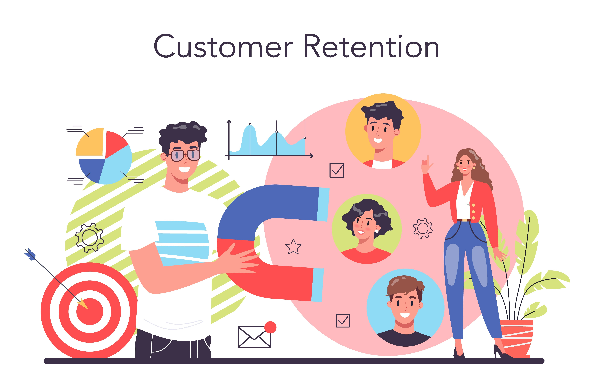
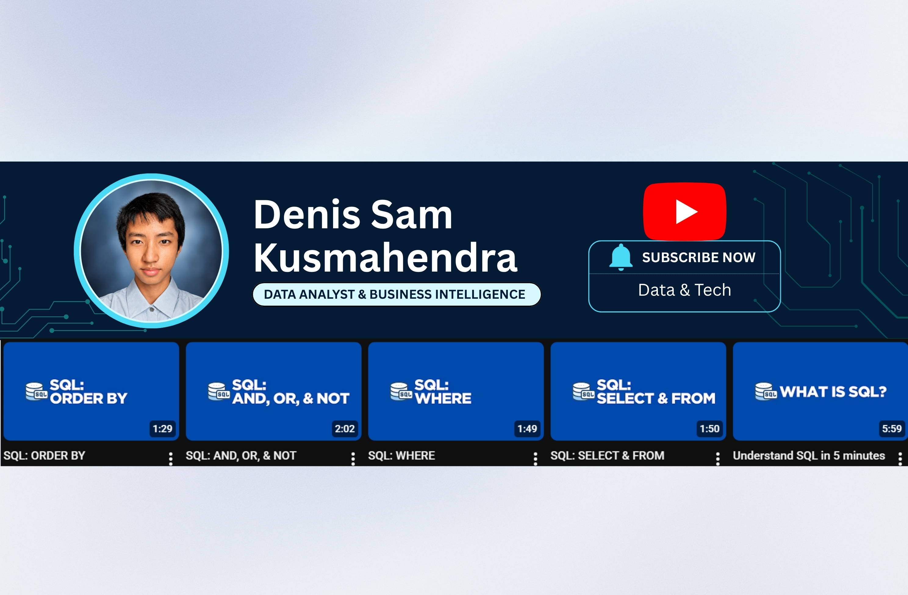

Demand Forecasting & Inventory Optimization
Built Holt-Winters forecasting models and an ABC-XYZ inventory matrix to support inventory planning and replenishment decisions.
Built Holt-Winters forecasting models and an ABC-XYZ inventory matrix to support inventory planning and replenishment decisions.
Analyzed GA4 event data in BigQuery to identify checkout funnel drop-offs, conversion rates, and marketing performance.

Applied RFM segmentation and Cohort Analysis to identify high-value customers and evaluate customer retention over time.
Interactive Power BI dashboard analyzing sales KPIs, revenue trends, and regional performance using the Olist e-commerce dataset.

Created a 5-part SQL tutorial series using PostgreSQL and a fictional e-commerce database, demonstrating technical communication and teaching ability.